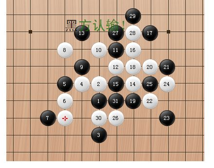

[学术讨论]收集连珠开局阶段的思维死角
首页
五子棋交流
#1 [学术讨论]收集连珠开局阶段的思维死角 作者：岳麓小棋后 发表时间：2009-4-5 0:26:28
要求：
1：看上去很强大的下法
2：该下法走出后对这手后悔不已
3：必须是反思维习惯的，没研究就会下出这一手
［ 茗弈小刀 于 2009-4-5 10:58:42 时奖励此帖[金币加 20 威望加1］
［此帖子已被 茗弈小刀 在 2009-4-22 19:15:56 编辑过］
#2 Re:收集连珠开局阶段的思维死角 作者：沉默是金 发表时间：2009-4-5 0:39:00
初学者这么下最多的。。
=======上图对应的爱五子棋谱代码如下，以便你拆解：========
h8h9h6i10g8
======================================================
#3 Re:收集连珠开局阶段的思维死角 作者：岳麓小棋后 发表时间：2009-4-5 0:42:11
好，那我也来举几个
=======上图对应的爱五子棋谱代码如下，以便你拆解：========
h8i9i6i10i8
======================================================
对于岚月立四这个五手两打怎么打，很多人会选这个5手，如果是，恭喜你中招了，等着被屠戮吧
#4 Re:收集连珠开局阶段的思维死角 作者：岳麓小棋后 发表时间：2009-4-5 1:00:03
明星的这个黑9手，虽然是黑石下出的，但是也有很多人会这么下，后面就是被虐，让你找不到“明星是黑大优”的感觉
=======上图对应的爱五子棋谱代码如下，以便你拆解：========
h8h9h6g9f9f8e7f11g10
======================================================
#5 Re:收集连珠开局阶段的思维死角 作者：岳麓小棋后 发表时间：2009-4-5 1:07:51
这样应该可以走，而且很强？？这样真不能这样走！这样走通浦月必胜了，对方“哦，哦，哦。。。”，从此对通型算是印象深刻了……
=======上图对应的爱五子棋谱代码如下，以便你拆解：========
h8i9g7g9
======================================================
#6 Re:收集连珠开局阶段的思维死角 作者：游戏人间 发表时间：2009-4-5 8:02:16
4楼那个黑大优
#7 Re:收集连珠开局阶段的思维死角 作者：岳麓小棋后 发表时间：2009-4-5 9:19:44
黑大优
=======上图对应的爱五子棋谱代码如下，以便你拆解：========
h8h9h6g9f9f8e7f11g10h11
======================================================
怎么感觉这个10手后黑很难下了，这个没深入去拆，或许黑真能走出这个沼泽，用黑石是很难走出了。。。
#8 Re:收集连珠开局阶段的思维死角 作者：游戏人间 发表时间：2009-4-5 9:43:07
11I10。。曾经一度认为这个黑走法必胜的。。。现在看只能算大优。不过实战也差不多必胜。［ 茗弈小刀 于 2009-4-5 10:57:56 时奖励此帖[金币加 20 威望加1］
#9 Re:Re:收集连珠开局阶段的思维死角 作者：岳麓小棋后 发表时间：2009-4-5 9:51:00
谢谢高人指点，楼上发的那三个只是我在三手房间下棋的曾经一些感受
明星拆的少，只知道曾经自己下出这个黑9，后面黑感到很被动，被对方虐了一通，后来拿这个又虐了我们茗弈的小飞机，哈哈

#10 Re:收集连珠开局阶段的思维死角 作者：茗弈小刀 发表时间：2009-4-5 10:59:36
妹妹这个主题非常好，支持！欢迎大家都参与交流。
#11 Re:收集连珠开局阶段的思维死角 作者：忧郁的双眼 发表时间：2009-4-5 11:56:53
云雨月的黑棋
很容易配合白棋做马步防
看上去很强大
其实。。。
［ 茗弈小刀 于 2009-4-5 21:53:35 时奖励此帖[金币加 20 威望加1］
#12 Re:收集连珠开局阶段的思维死角 作者：忧郁的双眼 发表时间：2009-4-5 12:00:51
=======上图对应的爱五子棋谱代码如下，以便你拆解：========
h8i9i8h7g8f8g9g10i7j6
======================================================
#13 Re:收集连珠开局阶段的思维死角 作者：忧郁的双眼 发表时间：2009-4-5 12:01:12
抛砖引玉
#14 Re:收集连珠开局阶段的思维死角 作者：英雄九段 发表时间：2009-4-5 18:51:36
=======上图对应的爱五子棋谱代码如下，以便你拆解：========
h8i9i7g9j6
==========================黑5必败开局============================［ 茗弈小刀 于 2009-4-5 21:56:55 时奖励此帖[金币加 20 威望加1］
#15 Re:收集连珠开局阶段的思维死角 作者：茗弈小刀 发表时间：2009-4-5 21:58:11
14楼的朋友没去申请威望吧，给你加一个，希望继续关注论坛。
#16 Re:收集连珠开局阶段的思维死角 作者：岳麓小棋后 发表时间：2009-4-6 18:22:56
这么好的帖子都没人顶，小刀姐姐送威望了，那我再发了，话说流星的这个6手后面也是机关重重
=======上图对应的爱五子棋谱代码如下，以便你拆解：========
h8i9j6g9j8g8
======================================================
#17 Re:收集连珠开局阶段的思维死角 作者：中大五子风 发表时间：2009-4-7 14:24:54
=======上图对应的爱五子棋谱代码如下，以便你拆解：========
h8i9j6g9j8g8h9h7
======================================================这个8看上去不错，其实是败着。
#18 Re:收集连珠开局阶段的思维死角 作者：岳麓小棋后 发表时间：2009-4-7 19:40:07
那我再举了哦，致命的黑9手，后面黑棋寻寻觅觅凄凄惨惨切切
=======上图对应的爱五子棋谱代码如下，以便你拆解：========
h8h9h6i10i6i9g9i7g6
======================================================
#19 Re:收集连珠开局阶段的思维死角 作者：就是爱玩 发表时间：2009-4-8 20:54:42
传说“见二就堵”是开局防守的格言。
某日，于一君对弈如下：
=======上图对应的爱五子棋谱代码如下，以便你拆解：========
h8h9j8g8i10i8j7j9h7
======================================================结果很悲惨。。。。。。
#20 Re:收集连珠开局阶段的思维死角 作者：就是爱玩 发表时间：2009-4-8 21:23:26
又传“开局争二”是开局至理。
某日，又与一君对弈如下：
=======上图对应的爱五子棋谱代码如下，以便你拆解：========
h8i9i8g8h7j7i7h6
======================================================黑7后，形成三个活二，洋洋自得间，不想白8布阵蜘蛛网，结果很郁闷。。。
#21 Re:收集连珠开局阶段的思维死角 作者：习惯下棋的时候抽烟 发表时间：2009-4-8 23:01:25
好帖子。支持！
#22 Re:收集连珠开局阶段的思维死角 作者：刺客代号四十七 发表时间：2009-4-8 23:40:42
这种思维一般出现在完全凌驾于小黑只上的一流软高身上，并不是可以简单的用收集得来的，而且这也与个人的棋风很有关系，攻杀型棋手对这种思维的理解可能比控盘型棋手更高一筹，楼主所说的思维死角，我印象中最早出现的，莫过于疏星黑5立2的变化，白棋11手在最想像不到的地方做杀
［ 茗弈小刀 于 2009-4-9 11:15:39 时奖励此帖[金币加 20 威望加1］
#23 Re:收集连珠开局阶段的思维死角 作者：茗弈小刀 发表时间：2009-4-9 11:15:15
22楼的朋友给你加个威望，这样你可以发贴了。
#24 Re:收集连珠开局阶段的思维死角 作者：茗弈梓轩 发表时间：2009-4-10 10:54:47
=======上图对应的爱五子棋谱代码如下，以便你拆解：========
h8h9h6g9f9f8e7f11g10h11i10i11g11j10h12k9j9l8m7h7e6f6e8e9d7c6f7c7h5g6f5
======================================================
#25 Re:[学术讨论]收集连珠开局阶段的思维死角 作者：岳麓小棋后 发表时间：2009-5-23 19:00:08
=======上图对应的爱五子棋谱代码如下，以便你拆解：========
h8i9j8i7g8
======================================================黑就挂了，看似想摆脱白的纠缠，向外拓展，实则陷入黑洞（白洞？）
#26 Re:[学术讨论]收集连珠开局阶段的思维死角 作者：屏蔽 发表时间：2009-5-23 19:49:54
=======上图对应的爱五子棋谱代码如下，以便你拆解：========
h8i9h6g9h7h9j9i10
======================================================5手：8-i8，9-j9似乎顺理成章？
=======上图对应的爱五子棋谱代码如下，以便你拆解：========
h8i9h7h9i7g9j9g7i8e9f9g6
======================================================不知这个9手算不算。
=======上图对应的爱五子棋谱代码如下，以便你拆解：========
h8h9i6g8f7g9f6f9i9e9d9g7
======================================================一子通三路的黑7……
#27 Re:[学术讨论]收集连珠开局阶段的思维死角 作者：自来水 发表时间：2009-5-23 20:03:09
=======上图对应的爱五子棋谱代码如下，以便你拆解：========
h8h9j6g9
======================================================
=======上图对应的爱五子棋谱代码如下，以便你拆解：========
h8h9h10i10g8i8g9
======================================================
=======上图对应的爱五子棋谱代码如下，以便你拆解：========
h8i9i6h11j7
======================================================
#28 Re:Re:[学术讨论]收集连珠开局阶段的思维死角 作者：岳麓小棋后 发表时间：2009-5-23 20:14:45
再发个不入流的野蛮开局
=======上图对应的爱五子棋谱代码如下，以便你拆解：========
h8j9f7i9g9
======================================================这黑的以为白防弱了，大意了，突然进入一个陌生的局面，结果一下就被白秒了
 棋后怪谱：日跳2思考.rar
棋后怪谱：日跳2思考.rar
#29 Re:[学术讨论]收集连珠开局阶段的思维死角 作者：自来水 发表时间：2009-5-24 19:01:19
LS 这个也算...黑两打必胜恶,这个五怎么看怎么恶心
=======上图对应的爱五子棋谱代码如下，以便你拆解：========
h8i9f7j9i7
======================================================
=======上图对应的爱五子棋谱代码如下，以便你拆解：========
h8i9f7j9h5
======================================================这个五看上去就不怎么强大....